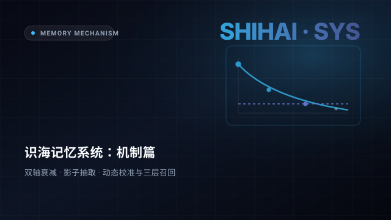

语音助手记忆架构：让本地 Agent 学会“适度遗忘”与动态校准
桌面助手的长程记忆常陷入“转头就忘”与“事无巨细死记硬背”两个极端。本文介绍记忆系统「识海」如何用 2700 行纯 Python 标准库，实现候选记忆审核入库、双轴遗忘曲线与分层关联召回。

痛点：金鱼记忆与病历式记忆的两极困局
桌面语音助手的长程记忆普遍容易滑向两个极端：
- 金鱼记忆：每一轮对话都是白纸，毫无连贯上下文。昨天刚交代过饮食偏好与过敏原，今天问起晚餐推荐依然毫无感知。
- 病历式记忆：走向另一个极端，什么琐碎细节都死记硬背、逐条留档、永不淡化。三个月前随口一句“今天好累”，日后还会机械地掏出来逐字念给你听，像是在念体检病历。
给桌面助手落地记忆系统「识海」时，工程目标并非一味追求“海量存储”，而是构建符合人类记忆规律的自然拟人机制：
- 牢固记住关键原则与硬约定（过敏、生日、事务托付），但允许日常闲谈随时间平滑淡出；
- 支持模糊回忆的语境表达（如输出“记不太清了，隐约记得和某件事相关”），而非生硬的逐字背诵；
- 支持记忆周期双向校准：被抱怨“你怎么忘了”时自动延长记忆半衰期；被夸“记性不错”时则将此前拉长的周期向默认值温和回调，避免记性过头带来压迫感；
- 贯彻防御性隐私承诺：一旦触发“忘了我吧”，系统从底层存储到磁盘各级日志进行彻底物理抹除，绝不嘴上说忘、底层留档。
全套机制仅依赖 2700 行纯 Python 标准库落地，不引入任何第三方依赖。
架构设计：四大核心原则
- 事件流是唯一权威源：一切变更均作为不可变事件按序追加进日志（append-only），当前状态仅为事件流按序折叠（fold）计算的投影视图。即使数据库发生异常，重启后只需从头重放事件流即可完成自愈。
- 模型抽取全走影子队列，人工确认方可转正：大模型在线抽取容易产生幻觉、断章取义或将客套话误当事实。模型候选绝不直接写库，统一沉淀至影子日志。经过数日观测通过率并经用户确认后，方可正式入库。
- 同步导出可读 Markdown 副本：每次记忆变更，系统自动生成一份分类清晰的只读 Markdown 文档供用户翻阅；坚持从数据库单向导出，避免手动改文件与数据库产生同步冲突。
- 遗忘是核心特性而非系统缺陷：设计基于半衰期的双轴衰减模型，低于阈值的记忆自动停止向提示词卡片注入，但保留在底层事实表，仅在用户显式发出指令时才执行物理销毁。
写入链路：严格的三道门禁
记忆写入遵循“记错比漏记代价更大”的原则，设置了三道严密的门禁过滤：
- 第一道：写入门。过滤关于记忆系统本身的元讨论、引用他人话语、带有“可能/也许/估计”等不确定语气的推测，以及无实质价值的零碎短语，并对当前有效记忆做去重拦截。
- 第二道：信任门。按信源严格划分信任等级：仅用户本人的语音、确定性规则与控制台具备写入权限；第三方接入（如 IM 转发消息）严禁沉淀为事实，杜绝提示词注入攻击。
- 第三道：裁决门。新信息与库内记忆计算相似度：
- ≥ 0.92：判定为纯重复，仅刷新最近提起时间戳（mention）；
- 0.85 ~ 0.92：交由模型裁决是全新事实（ADD）、细节补充（UPDATE）还是产生冲突后的覆盖更新（SUPERSEDE）。冲突时自动回填作废时间（invalid_at），完整保留事实的时间线流转。
遗忘与细节衰减模型
记忆的淡化由两条互相解耦的数学轴驱动：
- 重要度 × 保持率（I×R）遗忘曲线：读取时先按流逝时间 $\Delta t$ 与半衰期 $\tau$ 计算保持率 $R = 0.5^{(\Delta t / \tau)}$，再乘以初始重要度 $I$ 得到当前有效强度。重要事实（生日、过敏）半衰期 $\tau$ 设为无限大；常规话题设为 3 天；临时琐事设为 1.5 天。强度跌破 0.18 时停止向 Prompt 注入。
- D 轴细节度（表达清晰度）：管理回忆时的措辞颗粒度。高分值时完整引用细节；中等分值提示细节模糊；低分值时仅保留模糊线索（“只记得跟某事有关”），引导用户主动重述。
- 双向自适应校准：
- 用户抱怨“你怎么忘了”：半衰期系数 $\times 1.15$（动态延长记忆，上限 2.0 倍）；
- 用户夸赞“记性真好”：半衰期系数 $\times 0.95$（将此前拉长的周期向默认值温和回调，下限 1.0 倍）；
- 用户发出彻底遗忘指令：校准参数随全库同步归零重置。
召回分层与语境插队
每轮交互通过分层漏斗构建最多 1200 字的高价值上下文卡片：
- 第一层：全文关键词命中。基于 SQLite FTS5 倒排索引快速打捞精确字词，命中即可直接返回，节约算力。
- 第二层：稠密语义召回。在 FTS 未完全覆盖时计算向量余弦，除设置绝对相似度门槛（0.45）外，还施加“必须显著超出库内均值”的相对门槛，避免小样本冷启动时的误召回。
- 第三层：联想边拓扑扩散。基于共现（co）、语义相似（assoc）与共属性（coattr）拓扑边，向外扩散捞取紧密关联节点。
- 即时语境插队：将用户刚说的话按相邻双字（2-gram）切分匹配，关联事实优先置顶注入，确保最相关记忆第一时间进入模型视野。
核心难点与工程排障
- 冷启动阶段语义召回的假性命中：当库内只有寥寥数条记忆时，传统的绝对相似度阈值极易误将唯一陪跑的记忆召回。引入“召回分必须高出全库平均分 0.10”的动态相对门槛后，彻底消除单条事实时的强行召回。
- 主动提醒的节律与分寸控制：提前预告如果机械触发极易造成打扰。系统分析用户近两周的高频对话时段，仅在活跃窗口期输出预告；若处于静默低谷期则自动顺延，绝不在用户勿扰时段开口。
- 记忆冲突的确定性回执：当新旧记忆发生矛盾时，切忌向用户反问质询谁真谁假。系统默认采用最新陈述平滑顶替，并附带一句简短明确的变更告知（“好的，之前记的是不吃辣，已更新”），交互体验自然克制。
结论
让桌面助手拥有记忆，核心不在于存储介质有多庞大，而在于边界感与遗忘节奏的拿捏。通过确定性的事件流、多道写入门禁与可动态校准的衰减曲线，助手才能在不打扰、不窥探的前提下，真正做到懂分寸、知进退。